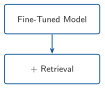
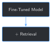

import sys
from pathlib import Path
BOOK_ROOT = Path(__file__).resolve().parents[2]
sys.path.insert(0, str(BOOK_ROOT / "code" / "chapter_02"))
sys.path.insert(0, str(BOOK_ROOT / "code" / "chapter_06"))
sys.path.insert(0, str(BOOK_ROOT / "code" / "chapter_07"))
from build_training_examples import extract_text
from data_quality_gate import build_archive_records, FULL_SET_DIR
from format_training_chunks import chunk_text, contains_cid_artifact, parse_timeline_entries
def build_retrieval_corpus(full_dir=FULL_SET_DIR):
records = build_archive_records(full_dir)
corpus = []
for record in records:
if record["status"] != "ok":
continue
text = extract_text(full_dir / record["file"])
for entry in parse_timeline_entries(text):
for chunk in chunk_text(entry["text"]):
if contains_cid_artifact(chunk):
continue
corpus.append({"report_num": record["rpt_num"], "from_time": entry["from_time"], "to_time": entry["to_time"], "text": chunk})
return corpus
corpus = build_retrieval_corpus()
print(f"{len(corpus)} retrievable chunks across {len({c['report_num'] for c in corpus})} reports")9 Hybrid System: Combining Fine-Tuning with Retrieval


Progress █████████░░░░ 9 / 13 · Estimated time: 45-60 min · Difficulty: 🔴 Advanced
9.1 Learning objectives
By the end of this chapter, you will be able to:
- Build a real keyword-based retrieval index over the full report archive, and explain why it covers every report, held-out one included
- Explain, with a real comparison, why dense sentence embeddings — Chapter 4’s own tool — aren’t the right retrieval method for this domain, and what to use instead
- Combine retrieval with Chapter 8’s fine-tuned model so an answer comes with a citation: which report, which time window
- Explain why a retrieval query and the fine-tuned model’s generation prompt need to be built differently, not reused as the same string
- Recognize, from a real run, that finding the right source and using it faithfully are two different problems — and that this chapter only solves the first one
9.2 Operational Problem
Sarah, the intervention engineer, asks the question Chapter 3 predicted she eventually would: “The fine-tuned model sounds like it knows our operation now. If I ask it what happened on a specific day, can I actually trust the answer — or do I still have to go find the PDF myself to check?”
Chapter 3 already gave the honest answer in the abstract: fine-tuning alone is a weak tool for citing a source. Chapter 8 measured exactly how weak — 0/50 exact-match on its own training sample. This chapter builds the other half of the system Chapter 3 promised: a real retrieval layer that can find the report a fact actually came from, and hand it to the fine-tuned model so the answer can be grounded in something citable, not just fluent.
9.3 Example: the same question, with and without retrieval
NoteReport #37 – the report Chapter 8’s model never trained on
Without retrieval:
Production Casing Run Csg & Cement Rig up casing
With retrieval:
Trip out of hole with BHA #18. Stop at 5,800' and circulate to cool
hole and tools.
Sources: [{'report_num': 37, 'from_time': '20:30', 'to_time': '21:30'}, ...]The first answer is the same generic, style-only pattern Chapter 8’s Field Notes already caught — fluent, plausible, and wrong for this specific report. The second is close to word-for-word what report #37 actually says at that exact time window, a report Chapter 8’s model never saw during training. The only thing that changed between them is that the second one was handed the right three sentences from the right report before it answered.
9.4 Theory
TipEngineering Translation: retrieval / RAG
Retrieval means searching a collection of documents for the ones most relevant to a question, without needing a language model at all — like a well-indexed filing cabinet. RAG (retrieval-augmented generation) means handing what you found to a language model as extra context before it answers, so the answer can be grounded in specific, real text instead of only in what the model happened to memorize.
TipEngineering Translation: BM25 keyword search
BM25 is a scoring method for keyword search: it ranks documents by how many of the query’s words they contain, weighted so rare, specific words ("fishing", "Schlumberger") count for more than common ones ("the", "drilling"). It has no idea what any of these words mean — it’s just counting overlap, carefully. rank_bm25, already one of this book’s dependencies, implements it in a few lines.
9.5 Why not dense embeddings?
Chapter 4 already found that this archive’s vocabulary defeats general-purpose sentence embeddings at the single-term level — BOP scored lower against its own meaning than against "birthday party". The same problem shows up again here, at the whole-sentence level. The query "lost tool face and became stuck during the slide" — close to a direct paraphrase of report #38’s actual text — should retrieve that report immediately. With sentence-transformers, it doesn’t: report #38’s real entry ranks 8th out of 677 chunks. With BM25, the same query ranks it 1st, by a wide margin over every other chunk in the archive. For text this dense with exact technical phrasing, keyword overlap turns out to be a stronger signal than semantic similarity from a general-purpose embedding model. This chapter uses BM25 for exactly that reason — not because keyword search is more sophisticated, but because it’s what the evidence actually supports here.
9.6 Implementation
9.6.1 Step 1: Build a retrieval corpus from every report
9.7 What problem are we solving?
Get every timeline chunk from every report Chapter 6’s gate passed — including the held-out report. Retrieval isn’t training: it should be able to find facts about any report, whether or not the fine-tuned model ever saw it.
9.8 Inputs
- Chapter 6’s
build_archive_records() - Chapter 7’s
parse_timeline_entries,chunk_text,contains_cid_artifact
9.9 Expected Output
Every quality-gated report’s chunks, in one flat list — more than Chapter 7’s training set, because this one keeps the held-out report in.
Running this exact code prints:
677 retrievable chunks across 75 reports9.10 What just happened?
677 chunks, 677 - 669 = 8 more than Chapter 7’s training set — the held-out report’s own 8 chunks, present here and nowhere in training. Same hard exclusion as always (the 1 unrecognized-format report), same reuse of Chapter 7’s parsing and artifact-filtering — the only difference from Chapter 7’s build_training_set_at_scale() is which one report this function chooses to keep.
9.11 Production Reality
Every source report here is public DOE data, so indexing it all is uncomplicated. A production system over confidential well data would need access control baked into retrieval itself — not just “can this user query the model,” but “can this specific chunk even be returned to this specific user” — which this simple version doesn’t attempt.
9.11.1 Step 2: Index with BM25 and retrieve
9.12 What problem are we solving?
Turn the flat chunk list into something searchable, and get back the most relevant chunks for a real question.
9.13 Inputs
- The
corpusfrom Step 1 - A query string
9.14 Expected Output
The top-k chunks, ranked by BM25 score, each labeled with its source report and time window.
import numpy as np
from rank_bm25 import BM25Okapi
def build_bm25_index(corpus):
return BM25Okapi([chunk["text"].lower().split() for chunk in corpus])
def retrieve(query, corpus, bm25, k=3):
scores = bm25.get_scores(query.lower().split())
top_indices = np.argsort(-scores)[:k]
return [{**corpus[i], "score": float(scores[i])} for i in top_indices]
bm25 = build_bm25_index(corpus)
for r in retrieve("trip out of hole stop at 5800 circulate cool hole and tools", corpus, bm25, k=3):
print(f" [{r['score']:.2f}] Report #{r['report_num']} {r['from_time']}-{r['to_time']}: {r['text'][:70]}")Running this exact code prints:
[18.07] Report #37 20:30-21:30: Production Drilling Trips Trip out of hole with BHA #18. Stop at 5,800
[14.98] Report #28 01:30-04:30: Make up Ulterra U616M 6 PDC bit Stop and circulate at 3,000 ft to cool
[14.13] Report #39 21:00-22:00: Production Drilling Cond Mud & Circ Circulate hole to cool directional9.15 What just happened?
The top result is report #37’s actual chunk, by a wide score margin over the next-best match — and report #37 is the one report Chapter 8’s fine-tuned model never trained on. Retrieval doesn’t need the model to have seen something to find it; it only needs the something to be in the corpus, which Step 1 made sure it was.
9.16 Production Reality
677 chunks fit entirely in memory, so scoring every one of them against a query, every time, is instant. A production archive with millions of documents needs a real search index (Elasticsearch, or a proper BM25 implementation with precomputed term indexes) instead of scoring everything from scratch per query — a different implementation of the same idea, not a different idea.
9.16.1 Step 3: Combine retrieval with the fine-tuned model
9.17 What problem are we solving?
Get a grounded, cited answer out of Chapter 8’s fine-tuned model — and avoid a real mistake this chapter’s own first draft made: using the model’s templated input as the retrieval query.
9.18 Inputs
- Chapter 8’s fine-tuned checkpoint
- A retrieval
query— a real information need, not the templatedinstruction/input_contextthe fine-tuned model expects
9.19 Expected Output
An answer, plus the specific report(s) and time window(s) it was grounded in.
def build_grounded_prompt(instruction, input_context, retrieved_chunks):
sources = "\n".join(f"[Report #{c['report_num']}, {c['from_time']}-{c['to_time']}]: {c['text']}" for c in retrieved_chunks)
return f"{instruction}\n{input_context}\n\nRelevant report excerpts:\n{sources}"
def answer_with_retrieval(model, tokenizer, instruction, input_context, query, corpus, bm25, k=3):
retrieved = retrieve(query, corpus, bm25, k=k)
prompt = build_grounded_prompt(instruction, input_context, retrieved)
answer = generate_reply(model, tokenizer, prompt, max_new_tokens=60)
return {"answer": answer, "sources": [{"report_num": c["report_num"], "from_time": c["from_time"], "to_time": c["to_time"]} for c in retrieved]}
instruction = "What happened on this well during this time window?"
input_context = "Well: FORGE 16A [78]-32 | Report #37 | Time: 20:30-21:30"
# The mistake: using the templated input itself as the retrieval query
print("Metadata-only query:")
for r in retrieve(f"{instruction} {input_context}", corpus, bm25, k=3):
print(f" Report #{r['report_num']}")
# The fix: a query describing the actual information need
query = "trip out of hole stop at 5800 circulate cool hole and tools"
result = answer_with_retrieval(lora_model, tokenizer, instruction, input_context, query, corpus, bm25)
print(f"\nGrounded answer: {result['answer']}")
print(f"Sources: {result['sources']}")Running this exact code prints:
Metadata-only query:
Report #25
Report #54
Report #54
Grounded answer: Trip out of hole with BHA #18. Stop at 5,800' and circulate to cool hole and tools.
Sources: [{'report_num': 37, 'from_time': '20:30', 'to_time': '21:30'}, {'report_num': 28, 'from_time': '01:30', 'to_time': '04:30'}, {'report_num': 39, 'from_time': '21:00', 'to_time': '22:00'}]9.20 What just happened?
The metadata-only query — the templated instruction and input_context the fine-tuned model was trained on — retrieves the wrong reports entirely: #25 and #54, nowhere near report #37. That string is nearly identical across hundreds of chunks ("What happened on this well during this time window? Well: ... | Report #NN | Time: ...") — it carries metadata, not the actual question. The real query finds report #37 immediately, and the grounded answer that comes back is close to word-for-word what that report actually says. Retrieval and generation need different inputs here: what finds the right document and what the fine-tuned model expects to see are not the same string, and treating them as interchangeable is the single easiest way for a hybrid system like this one to quietly fail.
9.21 Production Reality
This chapter hand-writes each query to demonstrate the mechanism. A real system needs the query to come from somewhere — the user’s own natural-language question, most directly, possibly rewritten or expanded first. Turning “what a user actually typed” into “a good retrieval query” is its own real subfield (query reformulation); this chapter assumes a reasonable query is already in hand.
9.22 Practical exercise
🟢 Beginner
Try it yourself: run python code/chapter_09/hybrid_rag_finetune.py from inside book/ (needs Chapter 8’s checkpoint — run that chapter’s script first if you haven’t), and compare the “without retrieval” and “with retrieval” answers for each of the 4 test cases.
You’ll know it worked when: the script prints Retrieval found the correct report in the top 3 for 4/4 test queries, and you can point to at least one case where the grounded answer contains a specific number or name that only appears in the retrieved report text.
9.23 Field notes
WarningField notes: finding the source and using it faithfully are different problems
Query: all 4 of this chapter’s test cases, comparing what the retrieved source actually said against what the grounded answer said.
Result:
| Report | Retrieval | Grounded answer matches source? |
|---|---|---|
#37 (held-out) |
✓ found | Yes — near word-for-word |
#38 (stuck pipe) |
✓ found | No — answer ignores the retrieved text entirely |
#21 (step rate test) |
✓ found | No — answer is unrelated to the retrieved content |
#49 (fishing) |
✓ found | Partial — topically right, not the specific detail |
Why: retrieval succeeded in all 4 cases — the correct report was always in the top 3. But handing the model the right text doesn’t force it to use that text. For #38, the model was given the exact “lost tool face and became stuck” passage and generated an unrelated answer about tripping in hole anyway. Nothing in this chapter’s setup makes the model’s answer accountable to the context it was given.
Lesson: a hybrid system’s citation only means “this is what was retrieved,” not “this is what the answer is actually based on.” Those can silently diverge, and this chapter has no way to catch it when they do — checking whether an answer is actually consistent with its cited source is exactly Chapter 10’s job, not this one’s.
9.24 Challenge exercise
🟠 Intermediate
Challenge: rerun this chapter’s 4 test queries using dense sentence-transformer embeddings (Chapter 4’s tool) instead of BM25, and compare retrieval accuracy directly. A reference solution is at code/chapter_09/challenge/challenge.py — on a real run, it scores 3/4 (missing exactly the #38 stuck-pipe query, the same one that ranked 8th in this chapter’s “Why not dense embeddings?” section), against BM25’s 4/4 on the same queries.
9.25 Key takeaways
- Retrieval should cover everything, held-out data included — a fine-tuned model’s blind spots are exactly where retrieval needs to work, not where it’s optional.
- For this archive’s dense technical phrasing, keyword search (BM25) beat general-purpose dense embeddings at finding the right source — the same domain-vocabulary gap Chapter 4 found at the single-term level shows up again at the sentence level.
- A retrieval query and a fine-tuned model’s expected input are different things. Reusing one as the other — the templated metadata string as a search query — silently retrieves the wrong documents.
- Successful retrieval doesn’t guarantee grounded generation. This chapter measured both separately and found them genuinely different: retrieval succeeded 4/4 times; the model faithfully used what it was given only some of that time.
9.26 Repository files
| File | Purpose |
|---|---|
code/chapter_09/hybrid_rag_finetune.py |
Builds a BM25 retrieval index over the full archive and combines it with Chapter 8’s fine-tuned model |
code/chapter_09/challenge/challenge.py |
Reference solution: dense-embedding retrieval, compared directly against BM25 |
notebooks/chapter_09_explore.ipynb |
Interactive companion notebook |
CautionCHECKPOINT — Chapter 9
Tip✓ WHAT YOU BUILT
hybrid_rag_finetune.py — a BM25 retrieval index over all 75 quality-gated reports (held-out report included), combined with Chapter 8’s fine-tuned checkpoint to produce cited, source-grounded answers. Chapter 10 picks up exactly where this chapter’s Field Notes left off: checking whether an answer is actually consistent with what it cites.
9.27 What can you do now that you couldn’t do before?
You can answer a question using both a model that’s learned your domain’s language and a search over your actual reports, together — and you can point to exactly which report and time window an answer came from, instead of asking the model to simply be right.
9.28 Suggested next step
Coming up in Chapter 10: this chapter’s Field Notes found a real gap — retrieval can find the right source and the model can still write an answer that ignores it. Chapter 10 builds the check this chapter is missing: verifying an answer is actually consistent with the report it cites, and flagging it when it isn’t, instead of trusting a citation just because one was attached.